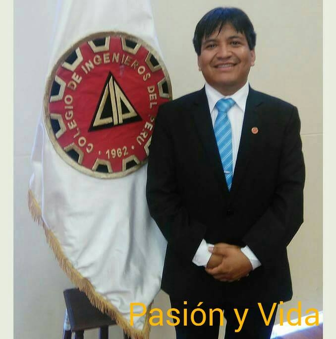
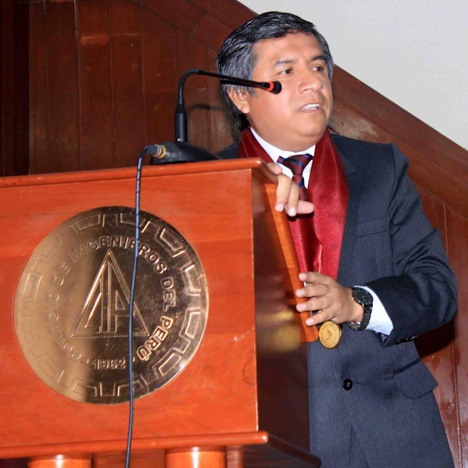
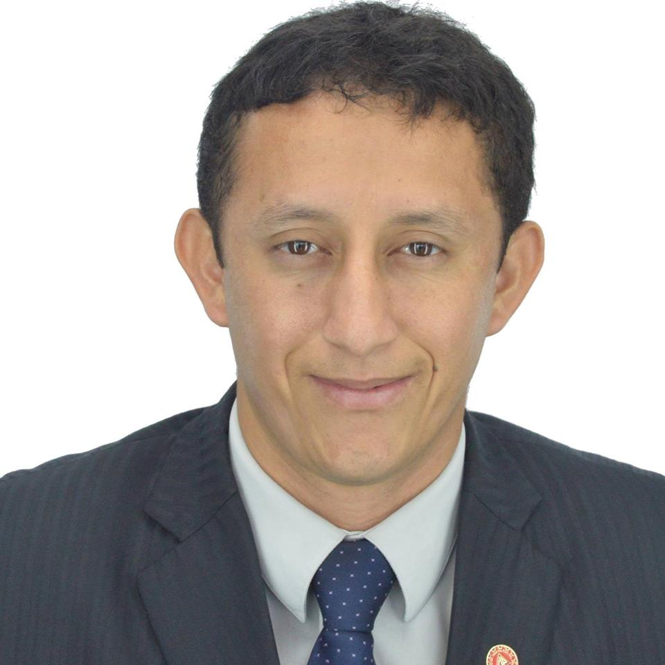

 Presidente Heyner Herless Ninaquispe Castro Ingeniero de Sistemas, Magister en Administración de Negocios(MBA), Certificado como Project Management Professional (PMP) por el Project Management Institute (PMI), Certificado en COBIT por ISACA
 Director de PMO Grover Eduardo Villanueva Sánchez Vice Decano del Consejo Departamental de La Libertad en Colegio de Ingenieros del Peru y jefe de oficina de planeamiento y presupuesto en Proyecto Especial Chavimochic
 Director de Educacion y Eventos José Luis Madrid Rentería Ingeniero de Sistemas, CIP 96114, MBA, CCNA, Docente Universitario, Consultor en TICs.
Director de Comunicaciones José Luis Ballón Ballón Ingeniero de minas especialista en geomecánica y voladura, más de 11 años de experiencia.Consultor certificado para la elaboración del Instrumento de Gestión Ambiental Correctivo (IGAC). Capacitaciones en elaboración y dirección de proyectos, gestión e international coaching
Directora de Voluntariado Brenda Lileth Yupanqui García Agente de Cambio del Programa Impulso del Grupo Graña y Montero, voluntariado corporativo orientado a impulsar el conocimiento, la investigación y la innovación en el país.Forma parte de la Comunidad del Portal de Ingeniería, plataforma de aprendizaje que busca promover la generación, desarrollo e intercambio de conocimiento de valor. Realizó en Alicorp, empresa líder de consumo masivo con operaciones en 5 países de Latinoamérica, una “Pasantía de Investigación Aplicada” orientada a la obtención de su Título Profesional, en el campo de Planeamiento de Producción.
Director de Administración y Finanzas Evert Gutierrez Sandoval Planificación y Presupuesto en Proyecto Especial Chavimochic, Trabajó como Analista de Proyectos en IMOP, Trabajó como Asistente de Planificación y Presupuestos en Universidad César Vallejo